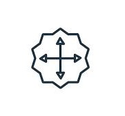
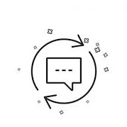
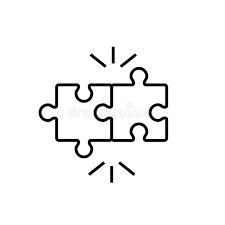
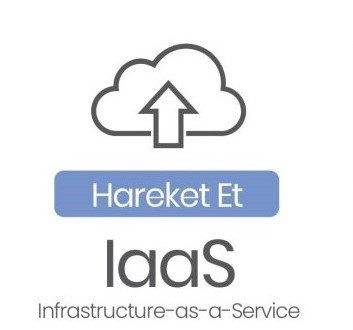
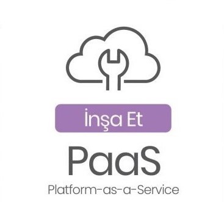
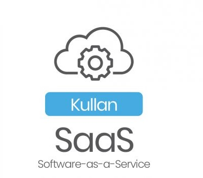
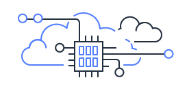

Bulut Tabanlı Yazılımın Faydaları

Gizlilik
Veri alışverişi şifreleme algoritmalarıyla yapılır, dışarıdan müdahaleler engellenir. Gelişmiş güvenlik sistemleri ile saklı verilerin değiştirilmesi, bozulması veya çalınması gibi saldırılar önlem alınır. Yapılan güvenlik güncelleştirmeleri sisteme anında uygulanır, böylece yeni çıkan virüslere, saldırı yöntemlerine vb. zararlı faaliyetlere karşı koruma sağlanır.
Ulaşılabilirlik
Bulut teknolojisinde sanallaştırma, sunucuların ve depolama cihazlarının paylaşımına ve kullanımının artmasına olanak sağlar. Var olan sanal makine üzerindeki veriler kolaylıkla paylaşım izni verilen farklı bir makineye aktarılabilir. Bu paylaşım özelliği sayesinde buluta bağlı her cihazdan her konumdan istenildiği anda verilere ulaşılabilir.
Maliyet
Bulut bilişim; donanım ve yazılım satın alma, şirket içi veri merkezleri kurma ve çalıştırma gibi yatırım giderlerini (sunucu rafları, güç ve soğutma için devamlı elektrik, altyapının yönetilmesi için çalıştırılan BT uzmanları) ortadan kaldırmaktadır. Bu da oldukça önemli bir tasarruf sağlamaktadır.

Ölçeklenebilirlik
İhtiyaç doğrultusunda depolama alanları kolayca genişletilebilir. Fiziksel depolamadaki yeni donanım maliyetleri, verileri taşıma ve sistem kesintileri gibi durumlar yaşanmadan sistem, istenilen boyutta istenilen sayıda cihazın kullanımına uygun hale getirilebilir. Tam tersi şekilde sistem küçültmesi de sorunlarla boğuşmadan yapılabilir.

Güncelleme
Farklı yerlerden erişim sağlanması imkanıyla yapılan güncellemeler buluta bağlı tüm cihazlara çok kısa sürede ulaştırılır. Her kullanıcıya ayrı ayrı güncellemeyi ulaştırma zahmeti yaşanmaz, dağıtımı basitleştirir. Kullanıcılar, güncelleştirme işlemi yapmadan dağıtımı yapılan güncel uygulamayı kullanır.

Uyumluluk
Bulut teknolojisi her sektörden firma için uygundur. Örneğin klinik yönetim yazılımı ile diş kliniklerine sunulan bulut hizmetinin, apartman yönetim ve izleme sistemi için de uygulanabilirliği vardır. Farklı sektörlerdeki firmaların ihtiyaçlarını karşılar.
Bulut Bilişim Modelleri
Üç ana bulut bilişim modeli vardır. Her model, bulut bilişim yığınının farklı bir bölümünü temsil eder.

Hizmet Olarak Altyapı (IaaS):
Bazen IaaS olarak da kısaltılan Hizmet Olarak Altyapı, bulut BT sistemi için temel yapı taşlarını içerir ve genelde ağ özelliklerine, bilgisayarlara (sanal veya tahsis edilmiş donanımda) ve veri depolama alanına erişim sunar. Hizmet Olarak Altyapı, BT kaynaklarınızın üzerinde en yüksek esneklik ve yönetim denetimi seviyesini sunar ve birçok BT departmanının ve yazılım geliştiricinin günümüzde aşina olduğu mevcut BT kaynaklarına benzer kaynaklar sunar.

Hizmet Olarak Platform (PaaS):
Hizmet olarak platform, kuruluşların altyapı (genelde donanım ve işletim sistemleri) yönetimi ihtiyacını ortadan kaldırarak uygulama dağıtma ve yönetim alanlarına odaklanmasını sağlar. Bu da kaynak tedariği, kapasite planlaması, yazılım bakımı, düzeltme ekleri veya uygulamanızın çalıştırılmasıyla ilgili diğer benzer zorlu görevler konusunda endişelenmemenize ve bu sayede daha verimli bir şekilde çalışmanıza yardımcı olur.

Hizmet Olarak Yazılım (SaaS):
Hizmet Olarak Yazılım, hizmet sağlayıcısı tarafından çalıştırılan ve yönetilen tamamlanmış bir ürün sunar. Hizmet Olarak Yazılım, çoğu zaman son kullanıcı uygulamalarını ifade etmek için kullanılır. SaaS teklifiyle, hizmetin bakımı veya altyapının yönetimi konusunda endişelenmeniz gerekmez. Düşünmeniz gereken tek şey bu yazılımı nasıl kullanacağınızdır. SaaS uygulamalarının yaygın örneklerinden biri, e-posta ürününe eklenecek özellikleri yönetme veya e-posta programının çalıştığı sunucularla işletim sistemlerinin bakımı konusunda endişelenmeden e-posta alıp gönderebildiğiniz web tabanlı e-posta uygulamalarıdır.
- 
-

-

Bulut Bilişim Dağıtım Modelleri
Genel bulut
Genel bulut ortamları, üçüncü taraf bulut hizmeti sağlayıcılarına aittir ve bu taraflarca işletilir. Bu hizmet sağlayıcıları, sunucu ve depolama gibi bilgi işlem kaynaklarını İnternet üzerinden sunar. Microsoft Azure, genel buluta bir örnektir. Genel bulutta tüm donanım, yazılım ve diğer destekleyici altyapı bulut sağlayıcısına aittir ve bu sağlayıcı tarafından yönetilir. Bu hizmetlere erişmek ve hesabınızı yönetmek için bir web tarayıcısı kullanmanız gerekir.
Özel bulut
Özel bulut, bulut bilgi işlem kaynaklarının özel olarak tek bir işletme veya kuruluş tarafından kullanılması anlamına gelir. Özel bulut, şirketin kendi veri merkezinde fiziksel olarak bulunabilir. Bazı şirketler, kendi özel bulutlarını barındırması için üçüncü taraf bir hizmet sağlayıcısı ile çalışabilir. Özel bulutta hizmetler ve altyapı özel bir ağ üzerinden sağlanır.
Hibrit bulut
Hibrit bulut ortamları, genel ve özel bulutu, ikisi arasında veri ve uygulama paylaşımına olanak tanıyan bir teknoloji aracılığıyla birbirine bağlayarak birleştirir. Verilerin ve uygulamaların özel ve genel bulut arasında taşınmasına olanak tanıyan hibrit bulut, işinize daha fazla esneklik ve dağıtım seçeneği sunarken mevcut altyapınızın, güvenlik ve uyumluluk süreçlerinizin iyileştirilmesine yardımcı olur.